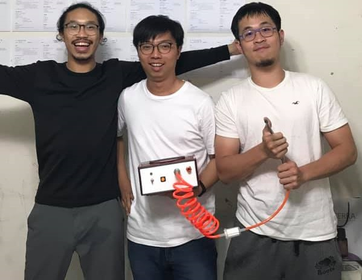

Software & Mechanical Engineer
Hsinchu, Taiwan
peterchen33011@gmail.com
+886-963-226-508
Self intro
Howdy! This is an engineer, an awful 3rd-baseman and a guy with hearing disability that have learnt nothing but to look at people's face while listening to them.
While appreciating you're time looking into my profile, I wonder if I can offer what you need, but I surely got some stories that can make you laugh.
I do a little bit of everything, try to help everyone a little bit.
Ask me about
Python | LabVIEW | C++ | SolidWorks | baseball | cooking | & everything else
I do everything that is required to make a lithography runs automatically.
I started as a LabVIEW developer, but now I write more of Python, C++ and kernel codes. I also do some PCB designing, mechanical designing and analysys.
Guess that's what engineering is like: to solve a problem, you gotta do a little bit of everything.
This is a start-up where we handcrafted car emission monitors and sold them to IDK whoever needs this.
This is where we started everything from scratch: raised funding, built-up a manufacturing line and got all the required instruments from school labs and flea markets and figured out how to make products, or how to find the right person to do each part of it.
A truly funny time, and all left for me are precious moments.
All I learnt from this school is greeting people with "Howdy!" and "Gig'em" and how to sing Aggie War Hymn.
Maybe also some fundamental as a software engineer, like Github-ing, StackOverFlow-ing and operating my dumb programs from terminals to make my final projects look a lot fancier than what they actually are.
Also Leetcoded and interviewed a lot. Can you imagine how horrible it was to find a job within COVID era?
No! Not a duplication! I really wasted 2 more years here just to get a master degree because I dunno what to do upon graduation...
I joined TiMMeL and worked with a bunch of stand-up guys, though my research project was not so cool: it was about a portable blood-flow sensor made with strain gauge and nothing more. I was advised by PhD. Wen-Pin Shih & PhD Chien-Hao Liu.
Fooling around with my entire college life.
Made a samll game with AutoCAD. Probably the worst game engine one can ever choose.